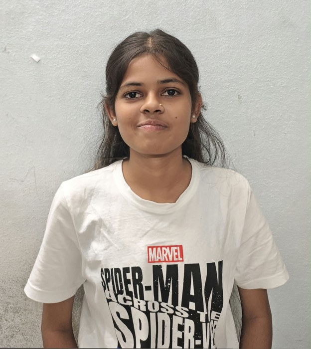
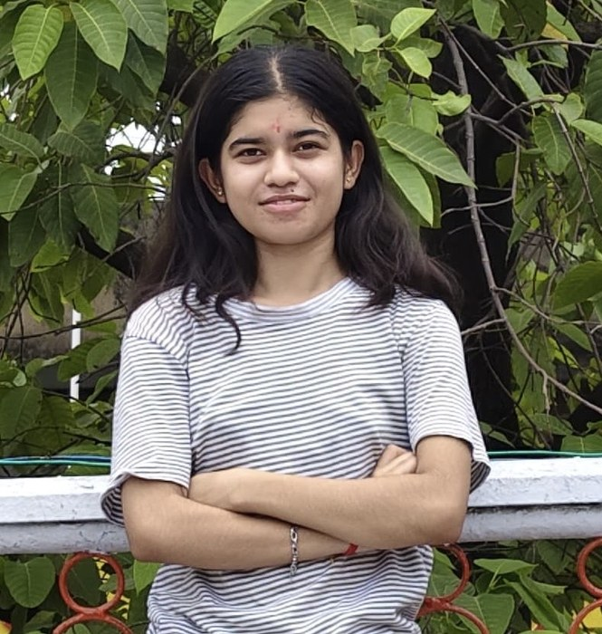

Hybrid Quantum Machine Learning Platform
for Early Disease Detection
Classical pre-processing feeds a hardware-efficient variational quantum classifier, benchmarked live against classical baselines on the same data — with model-agnostic explainability and full performance transparency, running end-to-end on a NISQ-friendly statevector simulator.
What is this platform, really?
This platform is an experimental medical decision-support tool designed to help spot signs of disease earlier. It takes routine numbers from diagnostic lab tests (like cell shape and size measurements) and looks for subtle warning patterns that might otherwise be missed.
It is called hybrid because it combines two computational worlds: everyday computers do the heavy lifting of preparing and filtering data, while an experimental quantum-computing simulation evaluates the key patterns. Quantum computing processes complex multidimensional relationships differently than normal computers, which researchers hope will help find disease clues earlier in difficult cases.
What you can do here: You don't need any technical background. Simply click "Run Full Hybrid Pipeline" above to watch the simulation train live, see an honest side-by-side comparison against standard hospital models on the dashboard, test individual sample patients, or even upload a batch spreadsheet to see instant dual predictions.
Quantum-Classical Hybrid Architecture
Trained with the analytic parameter-shift rule (the native quantum-circuit gradient, not classical backprop) against a binary cross-entropy loss. Built on a zero-dependency NumPy statevector simulator that is fully offline and provides a drop-in interface for Qiskit/PennyLane on physical quantum hardware.
01 / Biomedical Data Ingestion
Breast Cancer Wisconsin (Diagnostic) benchmark — 569 patient profiles, 30 cellular morphological features. The ingestion layer standardizes numerical distributions and feeds both classical and quantum branches.
02 / Transparent Benchmarking
Classical models are evaluated both on the full 30-feature set and on the exact same 4 PCA features the quantum circuit sees — isolating whether the quantum ansatz creates genuine expressive value.
03 / Model-Agnostic Explainability
Permutation feature importance (ΔAUC under stochastic shuffling) applied identically to the quantum circuit and classical baselines, enabling clinicians to audit decision criteria without black-box opacity.
TEAM PLATINUM
The team behind this platform.
Ubaid Sayyad
Backend & database — built the authentication system, patient history storage, and REST API layer.
Pranjal Madkam
Team Lead — overall architecture, quantum circuit design, and end-to-end pipeline integration.
Saloni Bopche
Frontend & UI — designed the dashboard experience, charts, and interactive prediction interface.
Sheshandri Lajurkar
Machine learning — worked on classical baselines, benchmarking, and model evaluation.

Roshani Tijare
Explainability & data — implemented feature-importance analysis and dataset preprocessing.

Anshu Ambule
Testing & documentation — wrote the test suite and authored the setup and demo guides.